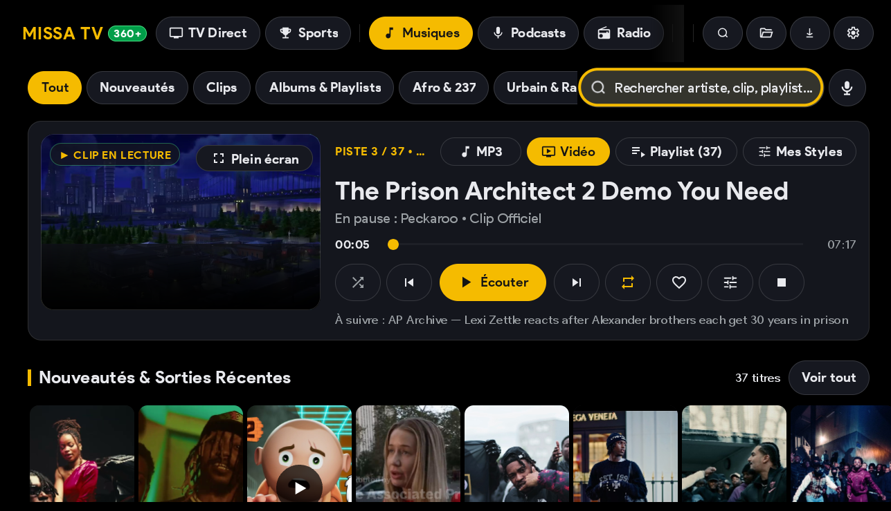

UNE APPLI. TES ENVIES.


L’INTERFACE RÉELLE • MISSA TV 360
CE SOIR,
TU AS ENVIE
DE QUOI ?
TU AS ENVIE
DE QUOI ?
FILMS & SÉRIES →
MUSIQUE ↗
LE PROBLÈME / 02
UNE APPLI.
PUIS
UNE AUTRE.
PUIS
UNE AUTRE.
01 ON OUVRE
02 ON CHERCHE
03 ON RECOMMENCE
ET SI ON FAISAIT
PLUS SIMPLE ?
PLUS SIMPLE ?
LA SOLUTION / 03
UN CHOIX.
TES ÉCRANS.
TES ÉCRANS.
LE MOIS2 000XAF / MOIS
L’ANNÉE10 000XAF / AN
NET
BOX NETWI-FI + INTERNETLA CONNEXION EST NÉCESSAIRE.
TÉLÉTABLETTETÉLÉPHONE
01 / REGARDER
L’HISTOIRE
DU MOMENT.
DU MOMENT.


FILMS / SÉRIES / MANGAS / DOCUMENTAIRES
02 / PASSER À AUTRE CHOSE
CHAÎNES
DE TÉLÉ.
DE TÉLÉ.
GROS PLAN SUR LE VRAI LECTEUR
MUSIQUE / SHORTS-DRAMAS
03 / ET POUR CHANGER
À CHACUN
SON TRUC.
SON TRUC.

JEUX VIDÉO / PODCASTS / RADIO
PETIT DÉBIT / 05
ON GARDE
LE FIL.
LE FIL.
PENSÉ POUR UN FLUX STABLE.MÊME AVEC UN PETIT DÉBIT.
MISSA TV 360 / À TOI DE VOIR
TON ENVIE
FAIT LE
PROGRAMME.
FAIT LE
PROGRAMME.
FILMSMANGAS MUSIQUE
MUSIQUETÉLÉCHARGE L’APPLI ↗
2 000 XAF/ MOIS
10 000 XAF/ AN
◇QR À VENIR
MISSA TV 360LE MONDE S’OUVRE